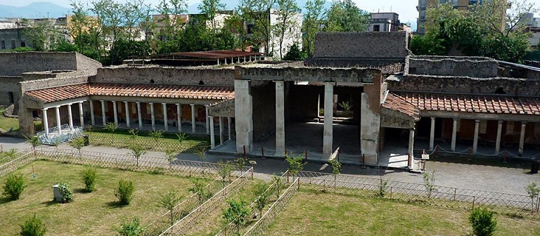
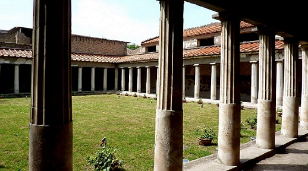

|
OPLONTIS
 Las excavaciones de Oplontis se hallan en la ciudad de Torre Annunziata. Era una zona suburbana de Pompeya. Destaca la Villa di Poppea. Estrabón escribió: "la costa de Miseno a Sorrento tiene el aspecto de una sola ciudad". Oplontis era un centro residencial, formado por una sucesión de villas con una mansio para el cambio de caballos, termas y hotel para los viajeros ... La villa data del siglo I a.e.c y fue ampliada en época claudia. Estaba en proceso de restauración cuando sucedió la erupción. Se cree que la villa pertenecía a Poppea Sabina; la segunda esposa del emperador Nerón, y se cree que esta villa era su residencia de verano. Apareció una inscripción en un ánfora, dirigida a Secundus, liberto de Popea. En el momento de la erupción la villa estaba deshabitada. No había muebles en las habitaciones. La mayoría de los objetos, estaban apilados y almacenados. Destacan los frescos de las habitaciones, representan de arquitectura imaginaria adornada con máscaras, aves, cestas de flores y frutas. También destaca la zona de invitados y la enorme piscina a la que se accede a través de un largo pasillo con dos líneas de bancos, conectando la parte más antigua a la más nueva. La parte oeste de la villa está pendiente de excavar. La villa también tenía baños termales privados calentados desde la cocina, que luego se convirtieron en la sala de estar.

|
|
Algunas fotos de 10/2024, la villa se estaba restaurando.
En 1974 durante la construcción de una escuela en la zona este, a 250m de la villa de Poppea, se descubrieron los restos de una villa y un sello de bronce, perteneciente a L. Crassius Tertius. Se cree que era el dueño de esta villa. También se encontraron los cuerpos, y una cantidad de monedas y joyas.
|